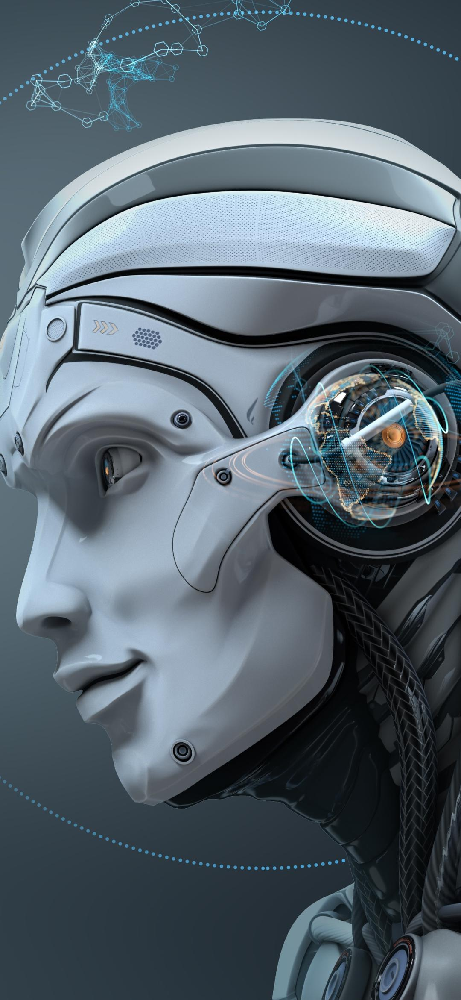

Introduction
The technology is the scientific way to create,learn,and practice in real life. Technology has been a main thing that has been leading all over the world .Nowadays, the use of technology is widely prevalent in medicine ,science , industry, communication , transportation , and daily life. It has helped in improving the productivity of individual and different business entrpries. It has undoubtedly made a very important contribution to the progress that mankind has made over the years. Now due to the rise in globalisation and liberalisation, all luxuries are now available on the internet which can be easily available with the help of technology.
Advantages
We cannot escape technology; it has improved the quality of life and brought about revolutions in various fields of modern-day society. It is human knowledge which involves tools, material and systems. The following are advantages of technology:
1) Increase production: The technology helps increase production multiple times .Human efforts and energy of working are limited . But with machinery, the production can be multiplied the number of times as machines have the capacities to perform better. The work done by the machine is more accurate and is done with perfection. All the products are alike, which is not possible in the case of human efforts.
2) Save time: Today time is money. Thus, technology helps to save a lot of time and increase efficiency and productivity .We can complete huge test within less time .Today everything is automated, and this technology helps to save a lot of time in doing things that are not possible by humans. Example: IF we do not have the time to buy clothes ,we just shop online, and we can get the delivery at our doorsteps . Thus it is through technology that one can use time on other important things.
3) Technology helps improve services: In case you buy a television ,it stops after a few days. You need not worry as the TV is in the warranted period. You can simply call the company or its customer care and get your TV fixed . Thus, with a simple phone call or mail things have become so easy.
4) Easy and quick communication: Technology has made communication just a button away. With a click of a button , you can make calls,send emails, fax, order things online , and do a lot of things with the help of technology . Technology has helped us in living better modes of communication . Now you don't need to write letters to your loved ones you're missing them .Do a video call and feel them close to you .
5) Reduce online crime/ cybercrime: Todday , the technology is so advanced that there are apps made to find fraud within seconds . Cyber-attacks have reduce as there are advanced algorithms made to detach any kind of cybercrime.
6) Safety: technology has increased the safety of the people . With the help of technology there are CCTV cameras made that keep your valuables at the camera and home safe . Everything is captured easily .Even our mobile phone , laptops, Godrej locker , have lock systems that keep our data and other valuables safe . you can use fingerprints , eyes or face recognition to open your phone , laptop , and other devices .

Impacts
Artificial intelligence(AI) has already played a bigger role in the modern world . Nowadays people can access all the things with the help of the internet just by clicking one button. People can now learn, create ,research , and can work by staying at one place . As technology and internet has already its own importent but in future it might get change the entire world .
Conclusion
Technology affects everything in our life . The way we deal with our daily work with other is influenced by technology . It has enhanced socialisation and productivity, among other spheres that touch our daily life.The power of the internet has changed everything and made the entire world connected. All our technology and devices are attributed to advancement in technology . There are many things that we can change and boast about when we talk of technology in the current century.